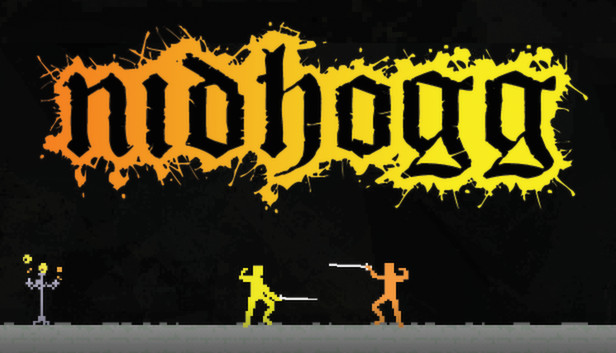

GameMaker es un motor de desarrollo de videojuegos ampliamente utilizado por desarrolladores independientes y aficionados debido a su accesibilidad y versatilidad. Es especialmente conocido por permitir la creación de juegos 2D con relativa facilidad, aunque también soporta el desarrollo en 3D.
GameMaker es un motor de desarrollo de videojuegos que permite a los usuarios crear juegos multiplataforma sin necesidad de tener experiencia en programación. Fue desarrollado originalmente por Mark Overmars y es mantenido y distribuido por YoYo Games.
GameMaker Language (GML):
Es un lenguaje de programación propio de GameMaker que permite a los desarrolladores escribir código para crear la lógica del juego. Aunque es simple, ofrece una gran flexibilidad y potencia.
Drag-and-Drop (D&D):
GameMaker es famoso por su sistema de arrastrar y soltar, que permite a los usuarios crear lógicas de juego complejas sin necesidad de escribir código. Es ideal para principiantes que desean adentrarse en el desarrollo de videojuegos.
Editor de Sprite y Animación:
Incluye herramientas para crear y editar sprites (imágenes en 2D) y animaciones dentro del propio motor, lo que facilita el desarrollo de personajes y objetos animados.
Multiplataforma:
Permite exportar juegos a múltiples plataformas como Windows, macOS, Linux, Android, iOS, HTML5, PlayStation, Xbox y Nintendo Switch.
Room Editor:
Herramienta visual para diseñar niveles y escenas del juego, permitiendo a los desarrolladores colocar objetos, configurar eventos y ajustar la lógica del nivel de manera visual.
Pathfinding y Colisiones:
GameMaker ofrece sistemas integrados para la detección de colisiones y la generación de caminos, lo que facilita la creación de comportamientos inteligentes en los personajes del juego.
Sonido y Música:
Herramientas integradas para la importación, edición y control de efectos de sonido y música dentro del juego.
Marketplace:
Un mercado donde los desarrolladores pueden comprar y vender recursos, scripts, extensiones y más, facilitando el acceso a recursos y herramientas adicionales.
GameMaker fue creado en 1999 por Mark Overmars como un proyecto personal llamado "Animo", que luego evolucionó a "GameMaker". En 2007, YoYo Games adquirió los derechos y desde entonces ha continuado su desarrollo y expansión.
Game Maker ha experimentado un crecimiento significativo desde su lanzamiento:
GameMaker (1999): Originalmente lanzado como "Animo", fue una herramienta básica para crear juegos simples. Posteriormente, se renombró a "GameMaker" y comenzó a ganar popularidad entre los desarrolladores independientes.
GameMaker 6 (2004): Introdujo importantes mejoras, incluyendo un mejor soporte para gráficos y sonido, lo que lo hizo más atractivo para los desarrolladores.
GameMaker 7 (2007): La versión que marcó la adquisición por YoYo Games, con mejoras en la interfaz y soporte para nuevos formatos de archivo.
GameMaker: Studio (2012): Esta versión revolucionó el motor al permitir la exportación a múltiples plataformas con un solo clic, incluyendo HTML5 y dispositivos móviles.
GameMaker Studio 2 (2017): La versión más reciente, con una interfaz rediseñada, nuevas herramientas de edición, y soporte extendido para gráficos en 2D y 3D.
Undertale: Es un videojuego de rol en 2D donde el jugador controla a un niño que ha caído al subsuelo: una gran región aislada bajo la superficie de la Tierra, separada por una barrera mágica. El jugador se encuentra con varios monstruos durante su viaje de regreso a la superficie, aunque algunos monstruos pueden involucrar al jugador en una pelea. El sistema de combate involucra al jugador navegando a través de los ataques mini bullet hell por parte del oponente. Se puede optar por pacificar y salvar a los monstruos o someterlos para matarlos. Estas elecciones afectan el juego, el diálogo, los personajes y la historia cambiando según las elecciones tomadas previamente.
Katana Zero: Katana Zero es un juego de plataformas y hack and slash en 2D presentado desde una perspectiva de desplazamiento lateral. Controlando al personaje jugador, el asesino con katana Sujeto Zero, el jugador individual completa contratos de asesinato para un psiquiatra. Zero puede correr, saltar, patear, recoger y lanzar objetos, atacar con su katana y esquivar. La capacidad de Zero para ralentizar el tiempo y predecir el futuro permite al jugador activar un efecto de cámara lenta, lo que le permite predecir el movimiento del enemigo más fácilmente, aunque el uso está limitado por un medidor que se rellena gradualmente.
Nidhogg: Nidhogg es un juego de duelos rápidos entre dos jugadores donde éstos luchan con espada en un entorno de movimientos laterales. Los jugadores pueden correr, saltar, resbalar, lanzar sus espadas y luchar con puños. La espada del personaje jugador puede blandirse a 3 alturas diferentes: baja, media y alta, y cambiar la posición para golpear la espada del oponente hará que este se desarme.

Hotline Miami:Un juego de acción violento y rápido con vista cenital, centrado en la planificación rápida y el combate intenso. El juego combina la perspectiva cenital con el sigilo, la violencia extrema y la narrativa surrealista, junto con una banda sonora y efectos visuales inspirados en la cultura de los 80. Hotline Miami se encuentra fuertemente influenciado en parte por la película policíaca neo-noir de 2011 Drive, dirigida por Nicolas Winding Refn.
Facilidad de Uso: GameMaker es accesible para principiantes gracias a su sistema de arrastrar y soltar y a su sencillo lenguaje de programación.
Rapidez en el Prototipado:Permite crear prototipos y juegos completos rápidamente, lo que es ideal para desarrolladores independientes y pequeños estudios.
Multiplataforma:La capacidad de exportar juegos a múltiples plataformas con facilidad lo convierte en una herramienta poderosa para llegar a un público amplio.
Comunidad y Recursos: Tiene una comunidad activa y una gran cantidad de tutoriales, lo que facilita el aprendizaje y la solución de problemas.
Económico:Comparado con otros motores de juego, GameMaker ofrece una estructura de precios accesible, especialmente para desarrolladores independientes.
Gran Biblioteca de Recursos:El marketplace y los recursos disponibles permiten a los desarrolladores acceder a gráficos, sonidos y scripts para acelerar el desarrollo.
Para saber mas sobre Game Maker y si te interesa, puedes chequear mas en su pagina oficial. Ahi aprenderas como utilizarlo y como podras darle vida a tus ideas. Solamente dame CLICK y comenzaremos con las maravillas.